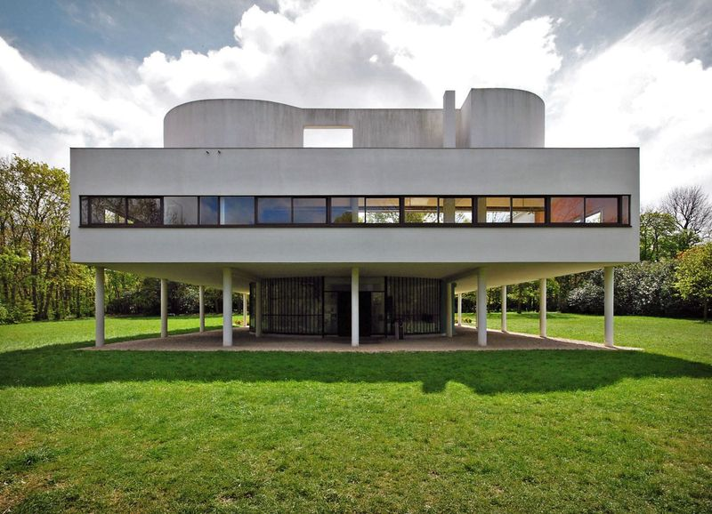
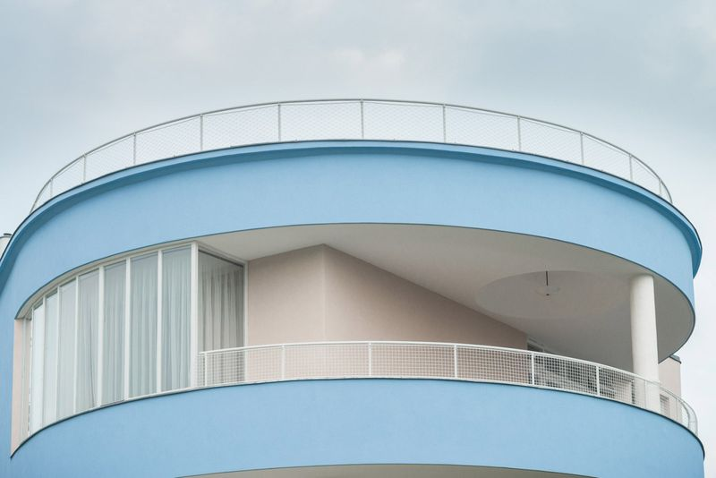

Náš dům byl navržen v moderním neofunkcionalistickém stylu, který se nám líbí a který odkazuje na funkcionalistickou tradici města Brna.
Funkcionalismus se řadí do moderní architektury 20. let 20. století. Charakterizuje ho jednoduchost, nadčasovost, strohost, čisté linie a geometrické tvary. Budovy jsou hranaté, mají plochou střechu, skeletovou konstrukci s nosnými sloupy, pásová okna, bílou fasádu a propojují interiér s exteriérem. Ostré linie střídají oblé tvary. Na prvním místě je vždy funkčnost a praktičnost, která má přednost před samotným designem. Skutečná krása spočívá ve funkčnosti budovy, nikoli v dekoracích. Pro funkcionalismus třicátých let byla typická nautická symbolika, připomínající architekturu zaoceánských lodí. Typickými motivy jsou kruhová okna, rampová schodiště, trubkové zábradlí nebo balkóny, napodobující kapitánský můstek.

Zdroj: Villa Savoye
Brno ve své době patřilo mezi jedno z předních funkcionalistických center tehdejší Evropy. Mezi nejvýznamnější brněnské architekty patří Bohuslav Fuchs, Jindřich Kumpošt, Josef Polášek, Ernst Wiesner. Jejich velkým vzorem byl švýcarský architekt Le Corbusier, který svým dílem výrazně ovlivnil vývoj moderní architektury. Mezi nejzajímavější funkcionalistické stavby v Brně se řadí Zemanova kavárna, Hotel Avion, Kavárna Era, Moravská banka, První moravská spořitelna, Městské lázně a samozřejmě Vila Tugendhat, zapsaná na seznamu světového dědictví UNESCO.

Zdroj: Tesařova vila
Americký architekt Louis Sullivan definoval funkcionalismus jednoduchým heslem: “forma následuje funkci”. Náš dům má několik funkčních prvků, které dohromady utváří podobu domu. Mezi ty nejdůležitější považuji:
- Základní hmotu domu ve tvaru jednoduchého kvádru pro efektivní využití místa na pozemku.
- Praktické dispoziční řešení s pokoji umístěnými na jih.
- Propojení domu se zahradou velkými okny ve všech pokojích.
- Lodžie tvořící přesahy v obou podlaží, které v létě zabrání přehřívání domu.
- Zastřešené parkovací stání a sklad.
Při návrhu domu jsme se snažili soustředit primárně na funkčnost. Všechny naše základní požadavky se podařilo implementovat a použili jsme i některé prvky typické pro funkcionalismus. Najdete je ve vizualizaci?